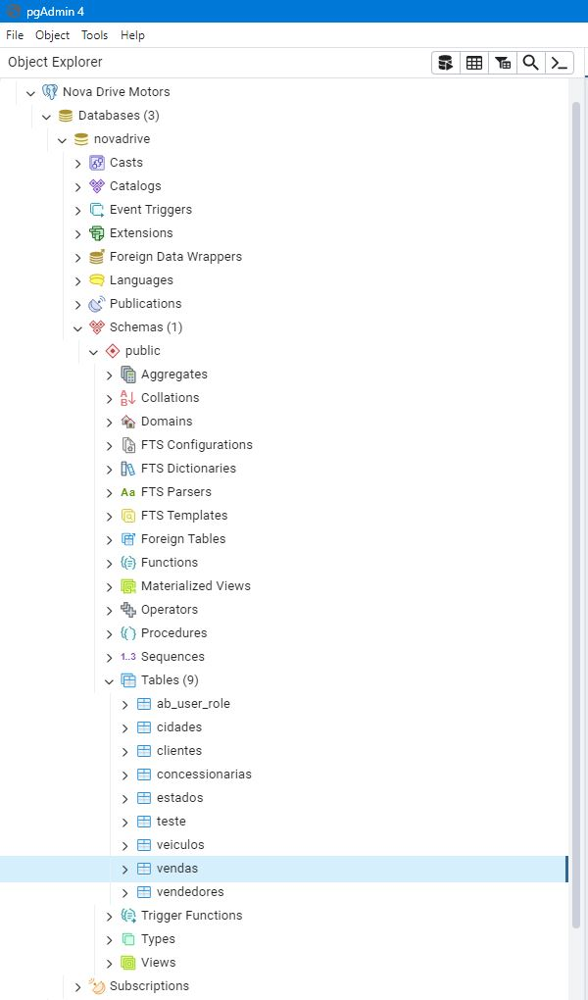
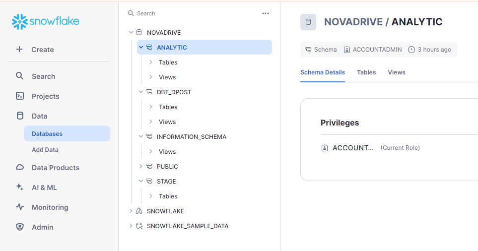
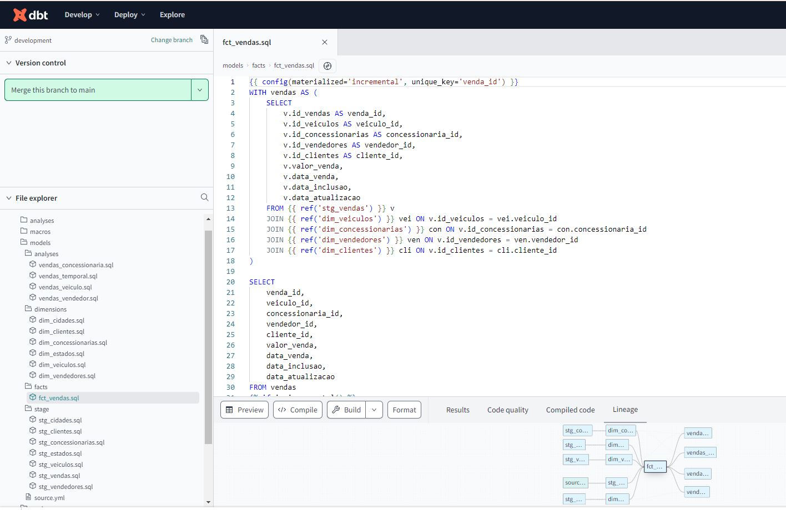
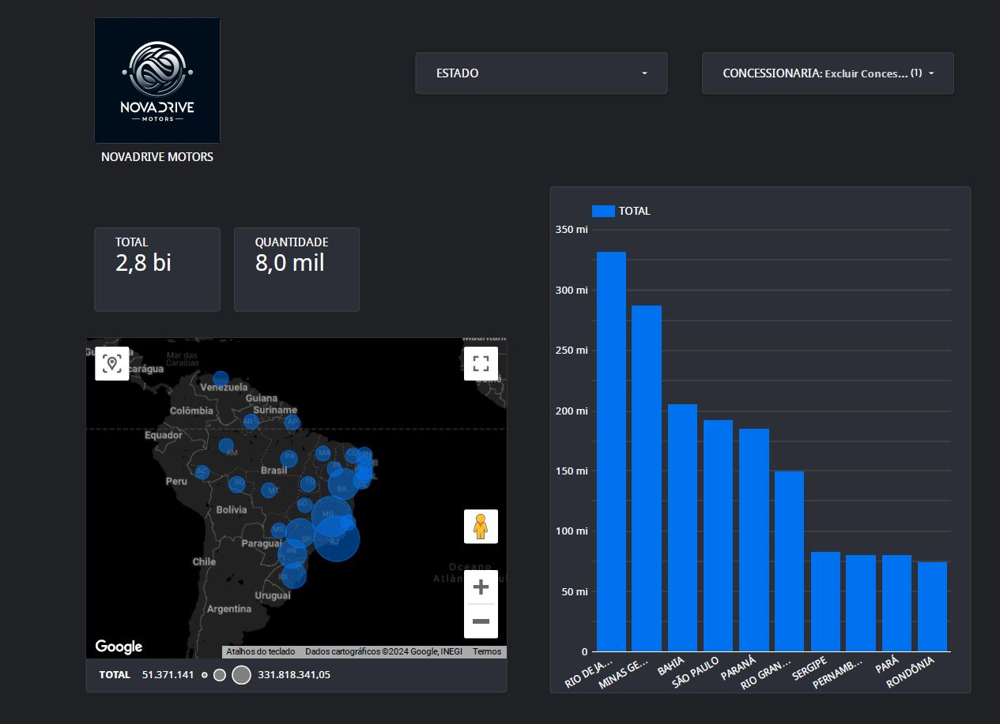

Project Overview
NovaDrive Motors is a data engineering project showcasing the implementation of a comprehensive data pipeline to analyze sales data efficiently. This project integrates multiple technologies:
- PostgreSQL for initial data exploration and handling.
- Apache Airflow on an AWS EC2 instance using Docker for automating data workflows.
- Snowflake for creating a scalable data warehousing solution.
- dbt (Data Build Tool) for transforming raw data into actionable insights.
- Looker for creating interactive dashboards and visualizations.
Project Steps
Step 1: Connect and Explore the Sales Database with PostgreSQL
Used PostgreSQL to connect and perform exploratory data analysis on the sales data obtained from the operational database.

Technologies:


Step 2: Build Data Pipeline with Apache Airflow
Developed a data pipeline using Apache Airflow to extract data from PostgreSQL, transform it, and load it into Snowflake for further analysis.
Python code example for the Airflow DAG:
from datetime import datetime, timedelta
from airflow.decorators import dag, task
from airflow.providers.postgres.hooks.postgres import PostgresHook
from airflow.providers.snowflake.hooks.snowflake import SnowflakeHook
default_args = {
'owner': 'airflow',
'depends_on_past': False,
'start_date': datetime(2024, 1, 1),
'email_on_failure': False,
'email_on_retry': False,
'retries': 0,
'retry_delay': timedelta(minutes=1),
}
@dag(
dag_id='postgres_to_snowflake',
default_args=default_args,
description='Load data from PostgreSQL to Snowflake',
schedule_interval=timedelta(days=1),
catchup=False
)
def postgres_to_snowflake_etl():
table_names = ['veiculos', 'estados', 'cidades', 'concessionarias', 'vendedores', 'clientes', 'vendas']
for table_name in table_names:
@task(task_id=f'get_max_id_{table_name}')
def get_max_primary_key(table_name: str):
with SnowflakeHook(snowflake_conn_id='snowflake').get_conn() as conn:
with conn.cursor() as cursor:
cursor.execute(f"SELECT MAX(ID_{table_name}) FROM {table_name}")
max_id = cursor.fetchone()[0]
return max_id if max_id is not None else 0
@task(task_id=f'load_data_{table_name}')
def load_incremental_data(table_name: str, max_id: int):
with PostgresHook(postgres_conn_id='postgres').get_conn() as pg_conn:
with pg_conn.cursor() as pg_cursor:
primary_key = f'ID_{table_name}'
pg_cursor.execute(f"SELECT column_name FROM information_schema.columns WHERE table_name = '{table_name}'")
columns = [row[0] for row in pg_cursor.fetchall()]
columns_list_str = ', '.join(columns)
placeholders = ', '.join(['%s'] * len(columns))
pg_cursor.execute(f"SELECT {columns_list_str} FROM {table_name} WHERE {primary_key} > {max_id}")
rows = pg_cursor.fetchall()
with SnowflakeHook(snowflake_conn_id='snowflake').get_conn() as sf_conn:
with sf_conn.cursor() as sf_cursor:
insert_query = f"INSERT INTO {table_name} ({columns_list_str}) VALUES ({placeholders})"
for row in rows:
sf_cursor.execute(insert_query, row)
max_id = get_max_primary_key(table_name)
load_incremental_data(table_name, max_id)
postgres_to_snowflake_etl_dag = postgres_to_snowflake_etl()
This Python code defines an Airflow DAG (`postgres_to_snowflake_etl`) that transfers data from PostgreSQL to Snowflake, orchestrated using Docker on an AWS EC2 instance with Ubuntu.
Screenshots of Apache Airflow DAG:


Technologies:

Step 3: Set Up Snowflake Data Warehousing Solution
Established databases, schemas, and tables in Snowflake to create a scalable and secure data warehousing solution.

Technologies:

Step 4: Build and Configure the Analytical Layer with dbt
Utilized dbt (Data Build Tool) to create models and perform data transformations in Snowflake's analytical layer.
Technologies: DBT
Step 5: Create Interactive Dashboards with Looker
Developed interactive dashboards in Looker to visualize and analyze data from Snowflake, providing insights for business stakeholders.
Technologies: looker
Final Thoughts
Throughout the NovaDrive Motors project, several challenges were overcome to successfully implement each phase of the data engineering pipeline. Initially, setting up Apache Airflow on an AWS EC2 instance proved challenging due to limitations of the free-tier server, which was resolved by migrating to a more robust instance with sufficient resources.
Manipulating data at the analytical layer using dbt was critical for answering business questions effectively. This involved creating complex models and transformations in Snowflake, enabling the extraction of actionable insights from the integrated data sources.
The integration of Looker for creating interactive dashboards provided stakeholders with intuitive tools to visualize and explore the data, facilitating data-driven decision-making processes.
By navigating these challenges and leveraging cutting-edge technologies like Apache Airflow, PostgreSQL, Snowflake, dbt, and Looker, NovaDrive Motors demonstrates a robust data engineering solution capable of handling large-scale data processing and analysis in a cloud environment.